कक्षा 9 में हमने मैडम लिंगदोह की कक्षा में लोकतंत्र के विभिन्न पहलुओं पर गंभीर विचार-विमर्श किया था। उस बातचीत से यह स्पष्ट निष्कर्ष निकला था कि लोकतंत्र शासन की अन्य सभी प्रणालियों (तानाशाही, राजतंत्र, सैनिक तानाशाही आदि) से कहीं बेहतर है।
लोकतंत्र को निम्नलिखित 5 बुनियादी कारणों से श्रेष्ठतम व्यवस्था माना जाता है:
- 1. नागरिकों में समानता को बढ़ावा: जाति, धर्म, लिंग या वर्ग के आधार पर बिना किसी भेदभाव के सभी को समान राजनीतिक अधिकार और वोट का अधिकार देना।
- 2. व्यक्ति की गरिमा में वृद्धि: समाज के प्रत्येक नागरिक (विशेष रूप से महिलाओं, दलितों व वंचित वर्गों) को सम्मानपूर्वक जीने का हक सुनिश्चित करना।
- 3. फैसलों की गुणवत्ता में बेहतरी: व्यापक विचार-विमर्श, खुली संसद और जनमत के आधार पर सोच-समझकर परिपक्व निर्णय लेना।
- 4. टकरावों को टालने व सँभालने की व्यवस्था: विभिन्न सामाजिक समूहों और विविधताओं के बीच हिंसा के स्थान पर शांतिपूर्ण बातचीत से समाधान निकालना।
- 5. गलतियों को सुधारने का अवसर: यदि सरकार कोई गलत फैसला ले लेती है, तो जन-आंदोलन, मीडिया या संसद द्वारा उस फैसले को बदलने या अगले चुनाव में सरकार को बदलने का अवसर होना।


तानाशाही शासन में नागरिकों को अधिकारहीन बना दिया जाता है, जबकि लोकतंत्र में शक्ति का असली स्रोत स्वयं जनता होती है:

जब हम अपने चारों ओर लोगों से बात करते हैं, तो हमारे सामने एक बड़ी दुविधा उभरकर सामने आती है:
⚠️ लोकतंत्र की मूल दुविधा: सिद्धांत बनाम व्यवहार
सैद्धांतिक रूप से: लोकतंत्र को दुनिया की सबसे आदर्श, न्यायसंगत और उत्तम व्यवस्था माना जाता है।
व्यावहारिक रूप से: ज़मीनी स्तर पर इसके कामकाज और परिणामों से पूरी तरह संतुष्ट होने वाले नागरिकों की संख्या बहुत बड़ी नहीं होती।
अक्सर लोग निर्णयों में देरी, भ्रष्टाचार, दलगत राजनीति और गरीबी के लिए लोकतंत्र को कोसने लगते हैं।
💡 लोकतंत्र हर मर्ज़ की दवा नहीं है (Democracy is not a magical cure)
हमारी सबसे बड़ी भूल यह होती है कि हम लोकतंत्र को सामाजिक, आर्थिक और राजनीतिक सभी समस्याओं का जादुई समाधान मान लेते हैं। जब हमारी आकांक्षाएं तुरंत पूरी नहीं होतीं, तो हम लोकतंत्र को दोष देने लगते हैं।
सच्चाई यह है कि लोकतंत्र शासन का केवल एक स्वरूप है: यह नागरिकों के लिए अनुकूल परिस्थितियां और नियम-कायदे बना सकता है। उन परिस्थितियों का लाभ उठाकर विकास, समानता और खुशहाली हासिल करना नागरिकों और उनके चुने हुए प्रतिनिधियों का कर्तव्य है।
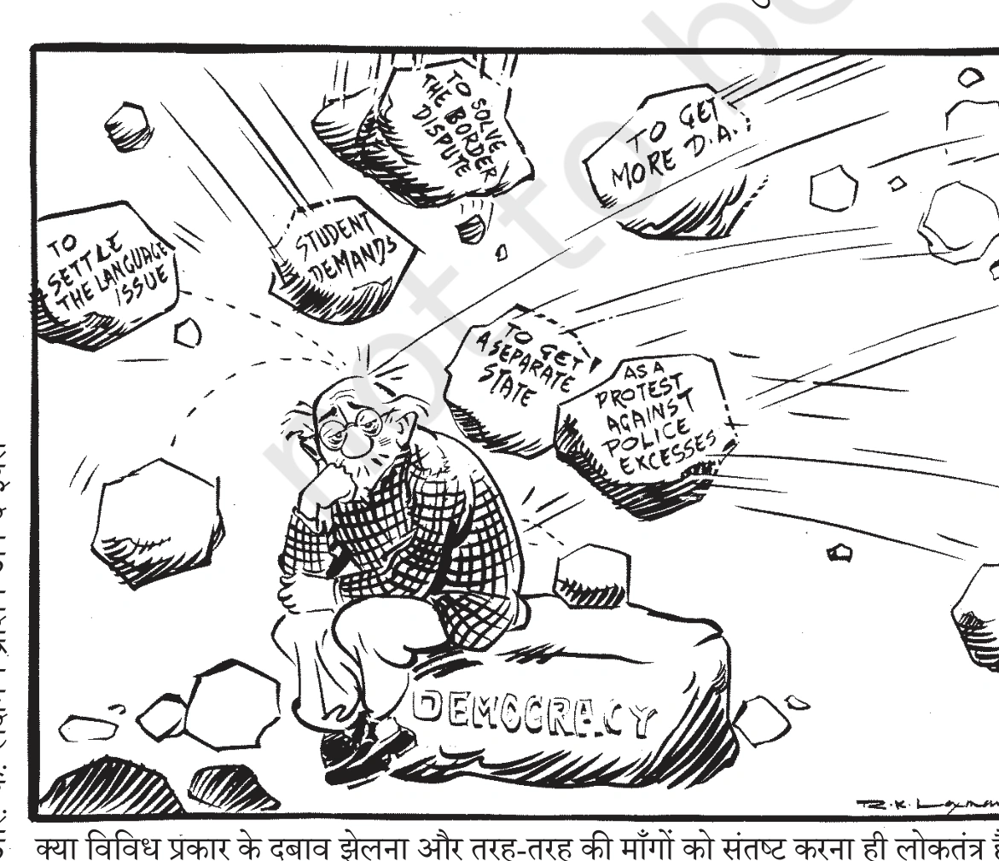
एक न्यूनतम लोकतांत्रिक व्यवस्था से हम कम से कम तीन मूलभूत बातों की अपेक्षा अवश्य करते हैं: सरकार उत्तरदायी (Accountable) हो, जिम्मेदार (Responsive) हो, और वैध (Legitimate) हो।

लोकतंत्र में नागरिकों को अपना शासक खुद चुनने का अधिकार होता है और शासकों पर जनता का निरंतर नियंत्रण बना रहता है। नीतियां बनाते समय खुली बहस और विचार-विमर्श किया जाता है:

⏱️ क्या लोकतंत्र में निर्णय लेने में देरी कमजोरी है?
तानाशाही में: तानाशाह को किसी संसद, विपक्ष या जनता की राय की परवाह नहीं होती, इसलिए वह पलक झपकते ही फैसले ले लेता है। किंतु ऐसे एकतरफा फैसले अक्सर जनविरोधी होते हैं और जनता पर जबरन थोपे जाने के कारण भारी अशांति फैलाते हैं।
लोकतंत्र में: फैसले लेने से पहले खुली बहस, विशेषज्ञों की राय, विपक्षी दलों से चर्चा और नियमों का पालन किया जाता है। इसमें समय ज़रूर लगता है, लेकिन ये निर्णय अधिक परिपक्व, टिकाऊ और सर्वस्वीकार्य होते हैं। अतः लोकतंत्र में फैसला लेने में लगने वाला समय कभी व्यर्थ नहीं जाता!
लोकतंत्र का सबसे मजबूत गुण पारदर्शिता (Transparency) है। इसका अर्थ यह है कि एक नागरिक यह जानने का अधिकार रखता है कि सरकार ने कोई फैसला किन नियमों और प्रक्रियाओं के तहत लिया है।

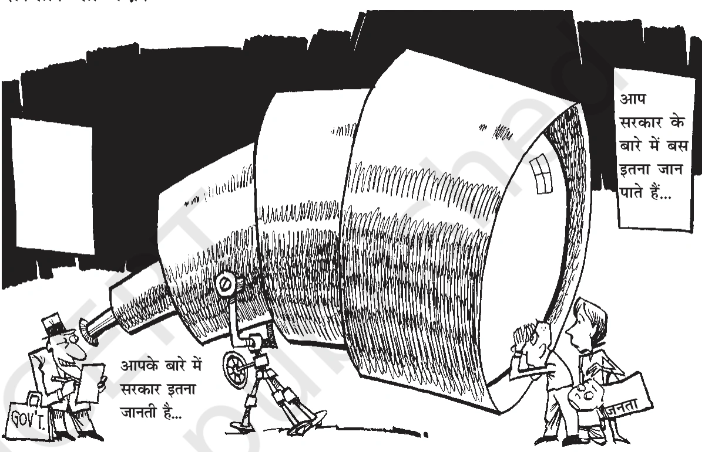
एक जिम्मेदार और उत्तरदायी सरकार तभी संभव है जब चुनाव पूरी तरह निष्पक्ष और पारदर्शी हों:

यह लोकतंत्र की सबसे निर्विवाद और सबसे बड़ी विशेषता है। लोकतांत्रिक सरकार भले ही धीमी हो, कम कुशल हो या कभी-कभी भ्रष्टाचार से ग्रस्त हो, लेकिन वह वैध सरकार (Legitimate Government) होती है क्योंकि यह जनता की अपनी चुनी हुई सरकार है।

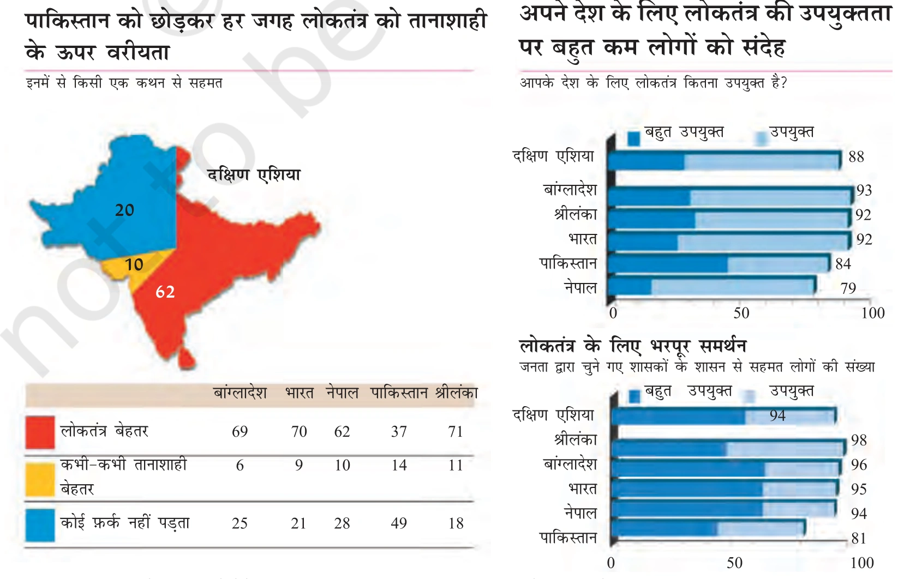
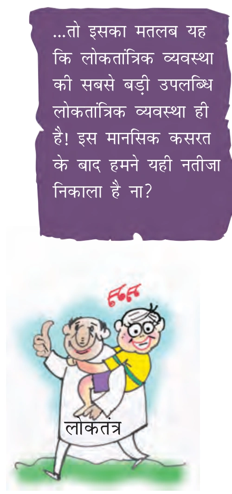
यदि हम 1950 से 2000 तक के 50 वर्षों के वैश्विक इतिहास का अध्ययन करें, तो यह तथ्य सामने आता है कि तानाशाही शासनों में आर्थिक संवृद्धि की दर लोकतांत्रिक व्यवस्थाओं की तुलना में थोड़ी बेहतर रही है।


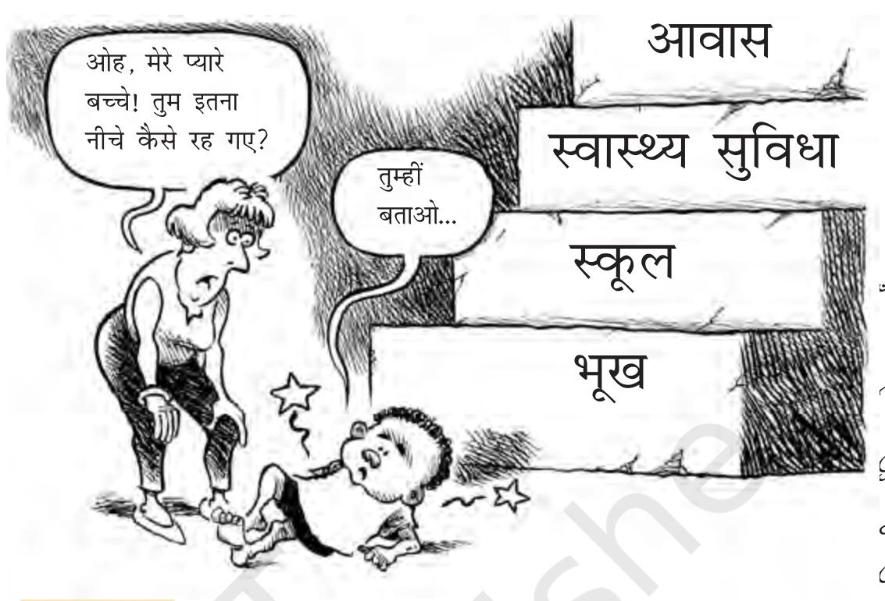
📊 आर्थिक विकास को प्रभावित करने वाले 4 मुख्य कारक
किसी भी देश का आर्थिक विकास केवल उसकी शासन प्रणाली पर निर्भर नहीं करता, बल्कि इसके पीछे निम्नलिखित कारक काम करते हैं:
- 1. देश की जनसंख्या का आकार: बड़ी आबादी वाले देशों में प्रति व्यक्ति संसाधन कम हो जाते हैं।
- 2. वैश्विक स्थिति एवं बाजार: अंतरराष्ट्रीय व्यापारिक माहौल और कच्चे तेल व तकनीक की उपलब्धता।
- 3. अन्य देशों से आर्थिक सहयोग: विदेशी निवेश, ऋण और अंतरराष्ट्रीय कूटनीतिक संबंध।
- 4. देश द्वारा तय की गई आर्थिक प्राथमिकताएं: रक्षा पर भारी खर्च बनाम शिक्षा, स्वास्थ्य और बुनियादी ढांचे पर निवेश।
यद्यपि समग्र रूप से तानाशाहियों में विकास दर थोड़ी अधिक रही है, किंतु जब हम गरीब मुल्कों (Poor Nations) की तुलना करते हैं, तो तानाशाही और लोकतंत्र के बीच का अंतर लगभग नगण्य रह जाता है:
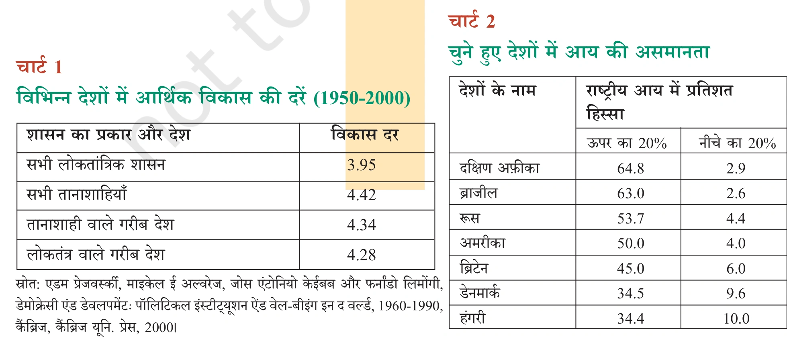
| शासन का प्रकार और देश | औसत आर्थिक संवृद्धि दर (1950 - 2000) |
|---|---|
| सभी लोकतांत्रिक शासन व्यवस्थाएं | 3.95% |
| सभी तानाशाही शासन व्यवस्थाएं | 4.42% |
| तानाशाही वाले गरीब देश | 4.34% |
| लोकतंत्र वाले गरीब देश | 4.28% |
💡 निष्कर्ष: क्या विकास दर के आधार पर तानाशाही को चुना जा सकता है?
कदापि नहीं! गरीब देशों में लोकतंत्र (4.28%) और तानाशाही (4.34%) की विकास दर में मात्र 0.06% का मामूली सा फर्क है। इस नाममात्र के आर्थिक लाभ के लिए कोई भी समझदार समाज अपनी अभिव्यक्ति की आजादी, विचार की स्वतंत्रता और मानवीय गरिमा को तानाशाही के पैरों तले रौंदने नहीं दे सकता। लोकतंत्र अन्य अनेक सकारात्मक परिणामों के कारण निर्विवाद रूप से सर्वश्रेष्ठ है।
लोकतांत्रिक व्यवस्थाओं में आर्थिक संवृद्धि की तुलना में आर्थिक असमानता और गरीबी को कम करना कहीं अधिक बड़ी चुनौती है। लोकतंत्र का आधार राजनीतिक समानता (Political Equality) है—अर्थात् संसद से लेकर मतदान केंद्र तक हर नागरिक को एक वोट और बराबर दर्जा मिलता है। किंतु आर्थिक मोर्चे पर बिल्कुल विपरीत स्थिति देखने को मिलती है:
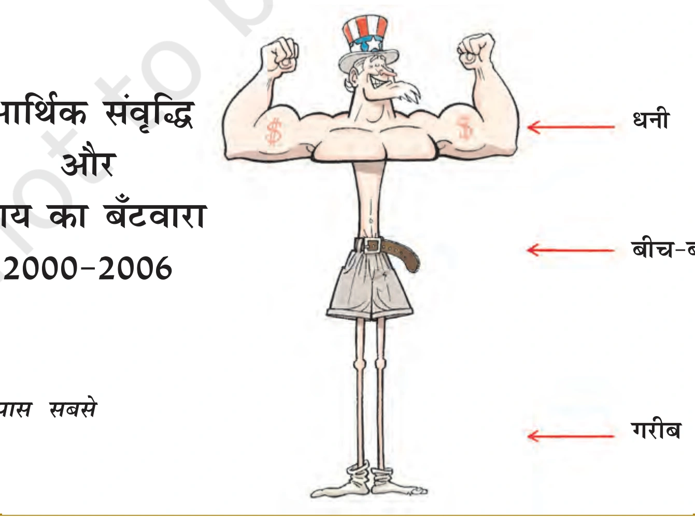
लोकतांत्रिक मुल्कों में भी मुट्ठी भर बेहद अमीर लोग कुल राष्ट्रीय संपत्ति के विशाल हिस्से पर कब्जा जमाए बैठे हैं। समाज के सबसे निचले हिस्से के लोगों के पास जीवन यापन के साधन निरंतर सिकुड़ते जा रहे हैं:
- शीर्ष 20% अमीर वर्ग: कई लोकतांत्रिक देशों (जैसे दक्षिण अफ्रीका व ब्राज़ील) में राष्ट्रीय आय के 60% से अधिक हिस्से का उपभोग करता है।
- निचला 20% गरीब वर्ग: राष्ट्रीय आय के मात्र 2% से 3% हिस्से पर गुज़ारा करने के लिए विवश है।

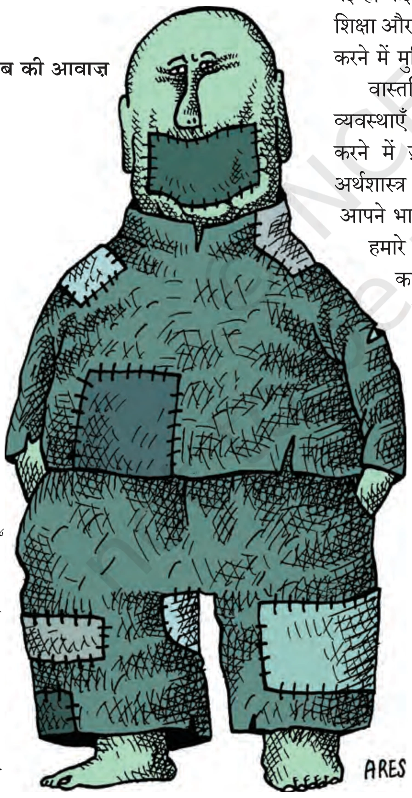
भारत जैसे लोकतांत्रिक देश में मतदाताओं का एक बहुत बड़ा हिस्सा गरीब है। चुनाव जीतने के लिए हर राजनीतिक पार्टी को गरीबों के वोट की सख्त ज़रूरत होती है। इसलिए सरकारें अनेक लोक-कल्याणकारी योजनाएं संचालित करती हैं:

⚠️ बांग्लादेश का उदाहरण (NCERT तथ्य)
हमारे पड़ोसी देश बांग्लादेश की आधी से अधिक आबादी गरीबी में जीवन यापन करती है। अनेक गरीब मुल्कों में तो स्थिति इतनी विकट हो चुकी है कि वे अपनी खाद्य आपूर्ति और बुनियादी जीवन रक्षक दवाओं के लिए भी अमीर देशों की मदद पर निर्भर हैं।
क्या लोकतांत्रिक शासन व्यवस्थाएं शांति और सद्भाव का जीवन सुनिश्चित करती हैं? दुनिया का कोई भी समाज अपने विभिन्न जातीय, भाषाई या धार्मिक समूहों के बीच के अंतरों और मतभेदों को पूरी तरह खत्म नहीं कर सकता। लेकिन लोकतंत्र ही एकमात्र ऐसी शासन व्यवस्था है जो इन मतभेदों और टकरावों को बातचीत के ज़रिये सम्मानपूर्वक हल करने का मंच देती है।


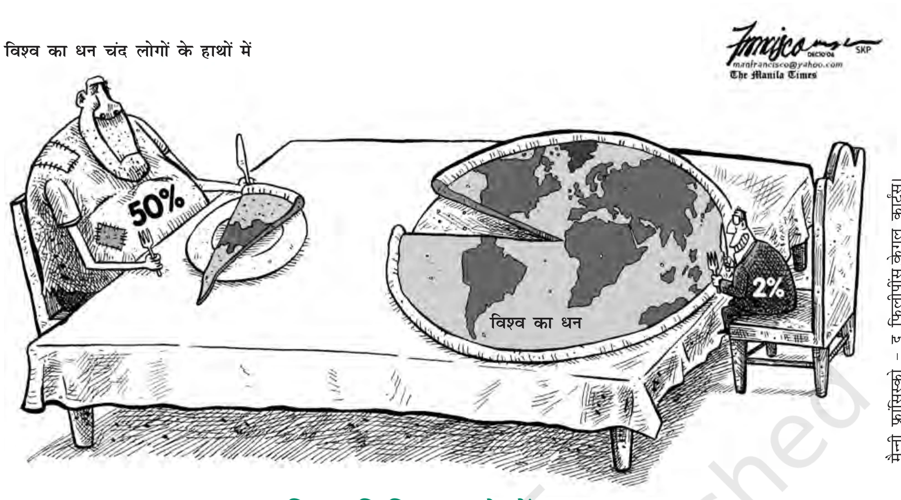
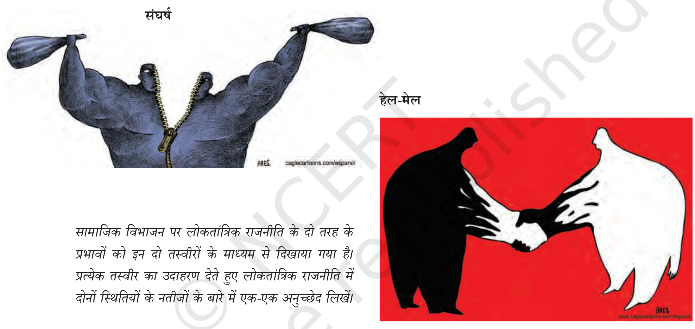
🏛️ लोकतंत्र में सामाजिक सामंजस्य की 2 अनिवार्य शर्तें (Most Important for Board Exams)
सामाजिक विविधताओं को सफलतापूर्वक संभालने के लिए लोकतंत्र को निम्नलिखित दो अनिवार्य शर्तों को पूरा करना होता है:
- शर्त 1: बहुमत का शासन केवल बहुसंख्यक समुदाय का शासन न बने: बहुमत की राय ही हमेशा अंतिम नहीं होती। बहुमत को हमेशा अल्पसंख्यकों के विचारों और भावनाओं का सम्मान करना पड़ता है। बहुमत का अर्थ किसी एक धर्म (जैसे हिंदू या मुस्लिम), किसी एक जाति या भाषाई समूह का स्थायी शासन नहीं है।
- शर्त 2: हर नागरिक को बहुमत का हिस्सा बनने का अवसर मिले: प्रत्येक नागरिक को अलग-अलग समय और अलग-अलग मुद्दों पर बहुमत का हिस्सा बनने का समान अधिकार होना चाहिए। यदि किसी व्यक्ति को उसके जन्म, जाति, नस्ल या धर्म के आधार पर बहुमत का हिस्सा बनने से रोका जाए, तो उसके लिए लोकतंत्र का कोई अर्थ नहीं रह जाता।

व्यक्ति की गरिमा और आजादी को सुरक्षित रखने के मामले में लोकतांत्रिक व्यवस्था दुनिया की अन्य सभी शासन प्रणालियों (तानाशाही, साम्यवाद, राजतंत्र) से मीलों आगे है। प्रत्येक व्यक्ति अपने साथ के लोगों से सम्मान पाना चाहता है। अक्सर टकराव तभी पैदा होते हैं जब कुछ लोगों को लगता है कि उनके साथ अनादर या अपमान का व्यवहार हुआ है।

दुनिया भर के अधिकांश समाज पुरुष प्रधान (पितृसत्तात्मक) रहे हैं। महिलाओं ने समानता और सम्मान के लिए लंबे समय तक ऐतिहासिक संघर्ष किया है:
- संवैधानिक मान्यता: आज लोकतंत्र में यह सिद्धांत स्थापित हो चुका है कि महिलाओं के साथ समानता का व्यवहार लोकतंत्र की पूर्व-शर्त है।
- कानूनी अधिकार: एक बार जब महिलाओं की समानता को नैतिक और कानूनी मान्यता मिल जाती है, तो उनके लिए घरेलू हिंसा, दहेज और भेदभाव के खिलाफ आवाज उठाना आसान हो जाता है। गैर-लोकतांत्रिक देशों में यह कानूनी आधार ही मौजूद नहीं होता।

भारत में सदियों से चली आ रही जाति व्यवस्था ने निचली जातियों के साथ भयानक अन्याय और भेदभाव किया। भारतीय लोकतंत्र ने इस स्थिति को पूरी तरह बदल दिया:
- अस्पृश्यता का अंत (अनुच्छेद 17): संविधान ने छुआछूत और जातिगत भेदभाव को दंडनीय अपराध घोषित कर दिया।
- समान अवसर व आरक्षण: अनुसूचित जातियों (SC), अनुसूचित जनजातियों (ST) और अन्य पिछड़ा वर्ग (OBC) को विधायिका, शिक्षा और सरकारी नौकरियों में आरक्षण देकर गरिमापूर्ण स्थान दिलाया गया।

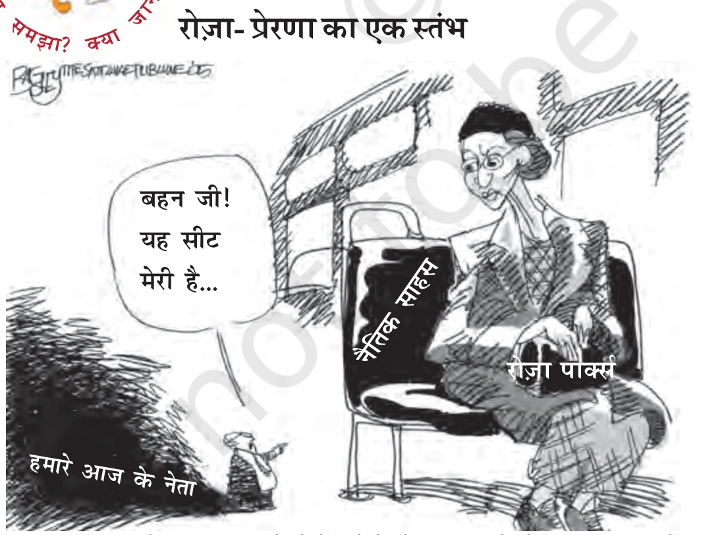
भारतीय लोकतंत्र की सबसे बड़ी ताकत यह है कि आम नागरिक यह महसूस करता है कि उसके एक वोट से देश की राजनीति और सरकार की दिशा तय होती है:
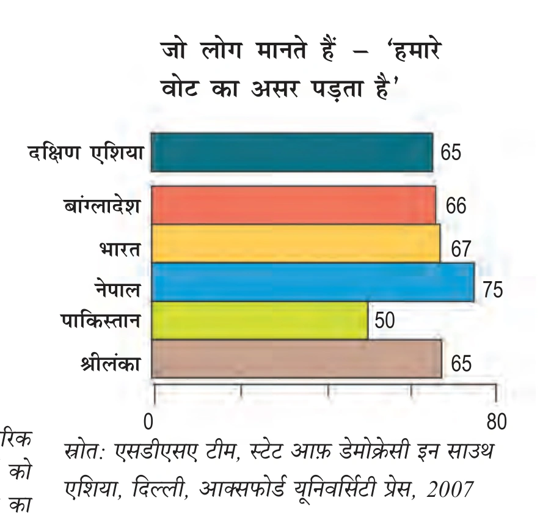
लोकतंत्र नागरिकों को शांतिपूर्ण विरोध और न्यायालय द्वारा अधिकारों के संरक्षण की गारंटी देता है:


लोकतंत्र को सुदृढ़ बनाए रखने में स्वतंत्र संस्थाओं और स्थानीय स्वशासन की निर्णायक भूमिका होती है:


लोकतंत्र की सबसे अनूठी और सुंदर विशेषता यह है कि इसकी परीक्षा कभी समाप्त नहीं होती। जब लोग लोकतंत्र के किसी एक लाभ का स्वाद चख लेते हैं, तो वे अगले और बेहतर लाभ की मांग करने लगते हैं:
- सतत अपेक्षाएं: जब लोगों को सड़कें मिल जाती हैं, तो वे अच्छे अस्पतालों और स्कूलों की मांग करते हैं। जब रोजगार मिलता है, तो वे बेहतर वेतन और सुरक्षा मांगते हैं।
- सजग नागरिक: लोग जब सरकार की आलोचना करते हैं और शिकायतें दर्ज कराते हैं, तो यह लोकतंत्र की असफलता नहीं, बल्कि उसकी सर्वोच्च सफलता का प्रमाण है! यह सिद्ध करता है कि नागरिक अब अंधभक्त या मूक प्रजा नहीं हैं, बल्कि वे सत्ताधारियों पर कड़ी नज़र रखने वाले सजग नागरिक बन चुके हैं।

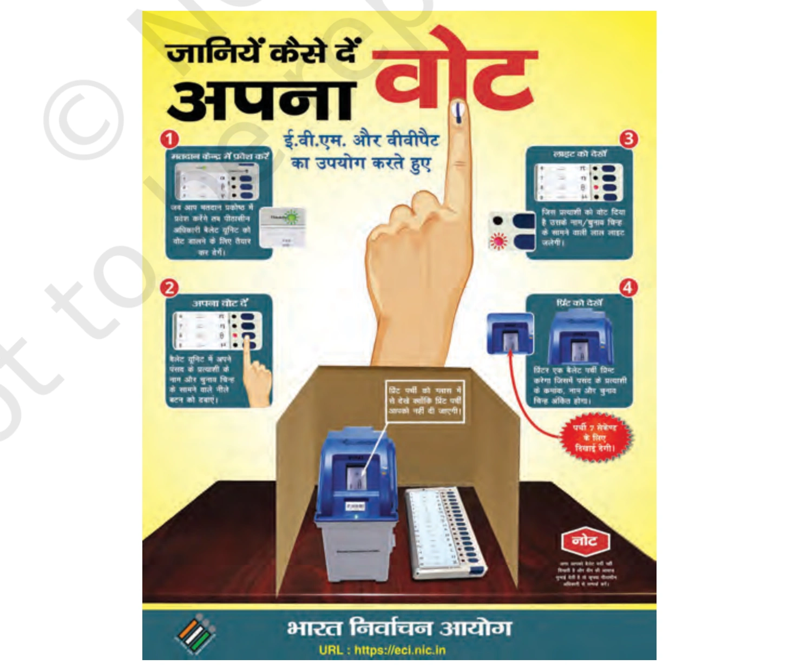

💡 बोर्ड परीक्षा हेतु 10 अति-महत्वपूर्ण अवधारणाएं (Quick Revision)
- 1. उत्तरदायी सरकार (Accountable Govt): जो जनता के प्रति जवाबदेह हो, संसद में सवालों के उत्तर दे और जिसके कामकाज पर जनता का नियंत्रण हो।
- 2. वैध सरकार (Legitimate Govt): जो देश के कानून और संविधान के अनुसार निष्पक्ष व स्वतंत्र चुनाव प्रक्रिया द्वारा जनता द्वारा चुनी गई हो।
- 3. पारदर्शिता (Transparency): नागरिक को यह जांचने का कानूनी अधिकार होना कि सरकारी फैसले तय नियमों व प्रक्रियाओं के अनुसार लिए गए हैं या नहीं।
- 4. सूचना का अधिकार (RTI Act 2005): नागरिकों को सरकारी दस्तावेजों और फाइलों की जानकारी मांगने का संवैधानिक अधिकार, जिसने भ्रष्टाचार पर प्रहार किया।
- 5. तानाशाही बनाम लोकतंत्र संवृद्धि: तानाशाही में संवृद्धि दर थोड़ी अधिक (4.42% vs 3.95%) हो सकती है, किंतु गरीब देशों में यह अंतर मात्र 0.06% है। लोकतंत्र स्वतंत्रता व गरिमा के कारण सदैव श्रेष्ठ है।
- 6. आर्थिक असमानता की चुनौती: राजनीतिक समानता के बावजूद लोकतांत्रिक मुल्कों में शीर्ष 20% अमीरों के पास राष्ट्रीय आय का 60% हिस्सा केंद्रित है, जबकि गरीब 3% पर निर्भर हैं।
- 7. बहुमत का शासन: इसका अर्थ किसी एक धर्म, जाति या भाषा का स्थायी एकाधिकार नहीं है। हर नागरिक को अलग-अलग मुद्दों पर बहुमत का हिस्सा बनने का हक है।
- 8. महिलाओं की गरिमा: लोकतंत्र ने लैंगिक समानता को नैतिक और कानूनी मान्यता प्रदान की है, जिससे महिलाओं को उत्पीड़न के खिलाफ लड़ने का संबल मिला।
- 9. रोज़ा पार्क्स: 1955 में अमेरिका में रंगभेद के खिलाफ बस की सीट छोड़ने से इनकार करने वाली साहसी महिला, जिन्होंने नागरिक अधिकार आंदोलन की नींव रखी।
- 10. शिकायतें लोकतंत्र की कसौटी: नागरिकों की बढ़ती उम्मीदें और शिकायतें लोकतंत्र की विफलता नहीं, बल्कि जागरूक और स्वाभिमानी नागरिकता का सबसे बड़ा प्रमाण हैं।